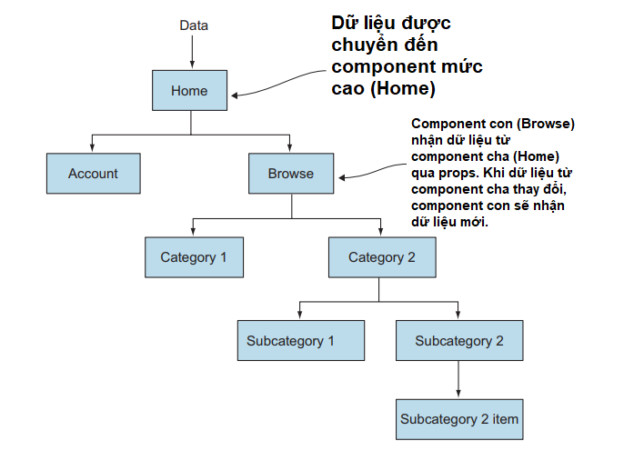

Nội dung bài học
React Native là một framework nguồn mở để xây dựng các ứng dụng Android và iOS bằng cách sử dụng React và các tính năng gốc (native capabilities) của nền tảng ứng dụng. Với React Native, chúng ta sử dụng JavaScript để truy cập các API của nền tảng cũng như để mô tả giao diện và hành vi của giao diện người dùng bằng cách sử dụng các component React (React component).
Trước khi tìm hiểu sâu hơn, chúng ta sẽ xem xét một ví dụ React Native đơn giản sau:
Trên đây là một Snack Player. Đây là một công cụ hữu ích do Expo tạo ra để nhúng và chạy các dự án React Native, đồng thời chia sẻ cách chúng kết xuất trong các nền tảng như Android và iOS. Mã đang hoạt động và có thể chỉnh sửa, vì vậy chúng ta có thể tương tác trực tiếp với mã đó trong trình duyệt của mình. Hãy tiếp tục và thử thay đổi văn bản "Xin chào React Native!" trên thành "Xin chào, thế giới!"
React Native làm việc dựa trên các khái niệm cơ bản sau đây:
JSX: Một sự kết hợp giữa HTML và JavaScript, được sử dụng trong React và React Native làm cho các đoạn mã có thể đọc dễ dàng và dễ bảo trì.
Luồng (Threading): Tất cả các hoạt động JavaScript, khi tương tác với nền tảng gốc (Native platform), được thực hiện trong một luồng (thread) riêng biệt, cho phép giao diện người dùng (UI) cũng như các hoạt ảnh (animations) hoạt động trơn tru. Luồng này là nơi chứa ứng dụng React và là nơi chứa tất cả lệnh gọi API, sự kiện chạm (touch event), và các tương tác được xử lý. Khi có thay đổi đối với component gốc, cập nhật được thực hiện theo lô (batch) và được gửi đến phía gốc. Điều này xảy ra ở cuối mỗi lần lặp của vòng lặp sự kiện. Đối với hầu hết các ứng dụng React Native, logic nghiệp vụ chạy trên luồng JavaScript.
React: Một tính năng tuyệt vời của React Native là nó sử dụng React.
Luồng dữ liệu một chiều (Unidirectional data flow hay one-way data flow): Luồng dữ liệu một chiều phù hợp với cách mà các ứng dụng React Native được xây dựng.
Diffing Algorithm hay Reconciliation: React sử dụng Diffing Algorithm hay Reconciliation để tối ưu hóa việc kết xuất nội dung đến trình duyệt web và kỹ thuật này được áp dụng triệt để trong React Native. (Tham khảo https://reactjs.org/docs/reconciliation.html )
Tư duy dựa trên các component: Ứng dụng trong React và React Native là việc tạo ra các component và cách tương tác giữa các component này.
Do sự phổ biến của React nên Reac Native kế thừa tất cả những ưu điểm từ React.
Tính khả dụng của nhà phát triển (Developer availability)
Với chi phí ngày càng tăng và sự sẵn có của các nhà phát triển di động gốc ngày càng giảm, React Native tham gia thị trường với một lợi thế chính: nó tận dụng lợi thế của sự giàu có của các nhà phát triển web và JavaScript tài năng hiện có và cung cấp cho họ một nền tảng khác để xây dựng mà không cần phải học một ngôn ngữ mới.
Năng suất của nhà phát triển (Developer productivity)
Theo truyền thống, để xây dựng một ứng dụng di động đa nền tảng, chúng ta cần một nhóm Android và một nhóm iOS. React Native cho phép chúng ta xây dựng Android, iOS và các ứng dụng Windows (trước đây) sử dụng một ngôn ngữ lập trình duy nhất là JavaScript và có thể thậm chí là một nhóm duy nhất, giảm đáng kể thời gian phát triển và chi phí phát triển.
Hiệu năng (Performance)
Nếu chúng ta theo dõi các giải pháp đa nền tảng khác, chúng ta có thể biết các giải pháp như PhoneGap, Cordova và Ionic. Mặc dù đây cũng là những giải pháp khả thi, nhưng sự đồng thuận là hiệu suất vẫn chưa bắt kịp với trải nghiệm mà một ứng dụng gốc mang lại. Đây là điểm mà React Native cũng tỏa sáng, vì hiệu suất thường không khác biệt đáng kể so với hiệu suất của một ứng dụng di động gốc được xây dựng bằng Objective-C/Swift hoặc Java.
Luồng dữ liệu một chiều (One-way data flow)
Luồng dữ liệu một chiều tách biệt React và React Native khỏi hầu hết các khung JavaScript khác và bất kỳ khung MVC nào. React kết hợp luồng dữ liệu một chiều từ các thành phần cấp cao nhất xuống dưới (xem hình)
Điều này làm cho các ứng dụng dễ dàng hơn nhiều lý do, bởi vì có một nguồn sự thật cho lớp dữ liệu trái ngược với việc nó nằm rải rác trong ứng dụng.
Trải nghiệm của nhà phát triển (Developer experience)
Trải nghiệm của nhà phát triển là một thắng lợi lớn cho React Native. Nếu chúng ta đã từng phát triển đối với web, chúng ta biết thời gian tải lại nhanh chóng của trình duyệt. Phát triển web không có bước biên dịch: chỉ cần làm mới màn hình và các thay đổi của chúng ta sẽ ở đó. Đây là một khoảng cách xa so với thời gian biên dịch dài của sự phát triển ứng dụng gốc như Android hay iOS. Một trong những lý do Facebook quyết định phát triển React Native là để khắc phục thời gian biên dịch dài của Ứng dụng Facebook khi sử dụng các công cụ xây dựng iOS và Android gốc. Để tạo một thay đổi giao diện người dùng nhỏ hay bất kỳ thay đổi nào khác, các nhà phát triển Facebook đã phải đợi rất lâu trong khi chương trình được biên dịch để xem kết quả. Thời gian biên dịch dài dẫn đến giảm năng suất và tăng chi phí cho nhà phát triển. React Native giải quyết vấn đề này bằng cách cung cấp cho chúng ta thời gian tải lại trang web nhanh chóng, cũng như các công cụ sửa lỗi của Chrome và Safari, giúp trải nghiệm gỡ lỗi rất giống với web.
React Native cũng có một tính năng gọi là hot reloading được tích hợp sẵn. Điều này có nghĩa là gì? Khi phát triển một ứng dụng, hãy tưởng tượng chúng ta phải nhấp vài lần vào ứng dụng của mình để đến nơi chúng ta đang phát triển. Trong khi sử dụng hot reloading, khi chúng ta tạo mã thay đổi, chúng ta không phải tải lại và nhấp lại qua ứng dụng để đến trạng thái hiện tại. Sử dụng tính năng này, chúng ta lưu tệp và ứng dụng chỉ tải lại thành phần chúng ta đã thay đổi, ngay lập tức cung cấp cho chúng ta phản hồi và cập nhật trạng thái hiện tại của giao diện người dùng.
Transpilation
Transpilation thường là khi một cái gì đó được gọi là transpiler lấy mã nguồn được viết trong một ngôn ngữ lập trình và tạo mã tương đương trong ngôn ngữ khác.
React Native sử dụng Babel để thực hiện bước dịch mã này và nó được tích hợp sẵn theo mặc định. Babel là một công cụ mã nguồn mở chuyển các tính năng mới nhất của ngôn ngữ JavaScript thành mã có thể được sử dụng ngày nay.
Năng suất và hiệu quả
Trong kỷ nguyên mới của các nhóm cross-platform và cross-stack, nhà phát triển cung cấp các ứng dụng thiết bị di động, web và máy tính để bàn sẽ năng suất và hiệu quả hơn và do đó sẽ có thể yêu cầu mức lương cao hơn so với một nhà phát triển web truyền thống, những người chỉ có thể cung cấp các ứng dụng trên nền web.
Cộng đồng (Community)
Cộng đồng React, và mở rộng ra là cộng đồng React Native, là một trong những nhóm cởi mở, hữu ích nhất.
Mã nguồn mở (Open source)
React Native là mã nguồn mở. Điều này mang lại vô số lợi ích. Thứ nhất, ngoài các Nhóm Facebook, hàng trăm nhà phát triển đóng góp cho React Native. Lỗi được chỉ ra ra nhanh hơn nhiều so với phần mềm độc quyền, vốn chỉ có các nhân viên trong một nhóm cụ thể làm việc để sửa lỗi và cải tiến. Nguồn mở thường tiến gần hơn tới những gì người dùng muốn bởi vì người dùng có thể chung tay tạo ra phần mềm những gì họ muốn nó thành. Với chi phí mua phần mềm độc quyền, phí cấp phép và chi phí hỗ trợ, nguồn mở cũng thắng khi đo lường giá cả.
Cập nhật ngay lập tức (Immediate updates)
Theo truyền thống, khi xuất bản các phiên bản mới của một ứng dụng, chúng ta sẽ phụ thuộc quy trình và lịch trình phê duyệt của kho ứng dụng (app store). Quá trình dài và tẻ nhạt này có thể mất tới hai tuần. Thực hiện một thay đổi, ngay cả khi nó cực kỳ nhỏ, rất khó khăn và đòi hỏi phải giải phóng phiên bản mới của ứng dụng. React Native, cũng như các framework ứng dụng lai (hybrid application frameworks), cho phép chúng ta triển khai ứng dụng di động cập nhật trực tiếp vào thiết bị của người dùng mà không cần thông qua sự chấp thuận của kho ứng dụng. Nếu chúng ta đã quen với web và chu kỳ phát hành nhanh chóng mà nó cung cấp, giờ đây chúng ta có thể thực hiện điều tương tự với React Native và các framework ứng dụng lai khác.
Bên cạnh các ưu điểm trên, React Native cũng có một số trở ngại sau:
Đầu tiên, React Native vẫn còn non nớt khi so sánh với các nền tảng khác như iOS, Android, và Cordova.
Một điều khác cần cân nhắc là chúng ta và/hoặc nhóm của chúng ta phải học một công nghệ hoàn toàn mới nếu chúng ta chưa quen với React.
Cuối cùng, React Native là một trừu tượng được xây dựng dựa trên các API nền tảng hiện có. Khi phiên bản mới hơn của iOS, Android và các nền tảng khác trong tương lai được phát hành, có thể có thời điểm mà React Native sẽ tụt hậu về các tính năng mới, buộc chúng ta phải xây dựng các triển khai tùy chỉnh để tương tác với các API mới này hoặc đợi cho đến khi React Native lấy lại tính năng tương đương với bản phát hành mới.
Trong quá trình phát triển Android và iOS, một view là một khối xây dựng cơ bản của giao diện người dùng: một component hình chữ nhật nhỏ trên màn hình có thể được sử dụng để hiển thị văn bản, hình ảnh hoặc phản hồi đầu vào của người dùng. Ngay cả những yếu tố trực quan nhỏ nhất của ứng dụng, như một dòng văn bản hoặc một nút, cũng là các loại view. Một số loại view có thể chứa các view khác.
Trong quá trình phát triển Android, chúng ta viết các view bằng Kotlin hoặc Java; trong quá trình phát triển iOS, chúng ta sử dụng Swift hoặc Objective-C. Với React Native, chúng ta có thể gọi các view này bằng JavaScript bằng cách sử dụng các component trong React. Khi chạy, React Native tạo các chế độ xem Android và iOS tương ứng cho các component đó. Vì các component React Native được hỗ trợ bởi cùng view như Android và iOS nên các ứng dụng React Native có giao diện, trải nghiệm và hoạt động giống như bất kỳ ứng dụng nào khác. Chúng ta gọi các component được hỗ trợ bởi nền tảng này là Component gốc. React Native đi kèm với một bộ Component gốc thiết yếu, sẵn sàng sử dụng cho phép chúng ta có thể bắt đầu xây dựng ứng dụng của mình. Đây là các Component cốt lõi (Core Components) của React Native. React Native cũng cho phép chúng ta xây dựng các Component gốc cho Android và iOS để phù hợp với nhu cầu riêng của ứng dụng của chúng ta. Tham khảo tại https://reactnative.directory/
React Native có nhiều Component cốt lõi cho mọi thứ, từ điều khiển (controls) đến chỉ dẫn (indicators) hoạt động. Chúng ta có thể tìm thấy tất cả chúng được ghi lại trong phần API tại https://reactnative.dev/docs/components-and-apis . Chúng ta sẽ chủ yếu làm việc với các Component cốt lõi sau:
| REACT NATIVE UI COMPONENT | ANDROID VIEW | IOS VIEW | WEB ANALOG | Mô tả |
|---|---|---|---|---|
| <View> | <ViewGroup> | <UIView> | <div> | Vùng chứa hỗ trợ bố cục với flexbox, kiểu, một số xử lý cảm ứng và điều khiển trợ năng. |
| <Text> | <TextView> | <UITextView> | <p> | Hiển thị, tạo kiểu và lồng các chuỗi văn bản và thậm chí xử lý các sự kiện chạm. |
| <Image> | <ImageView> | <UIImageView> | <img> | Hiển thị các loại hình ảnh khác nhau. |
| <ScrollView> | <ScrollView> | <UIScrollView> | <div> | Một vùng chứa cuộn chung có thể chứa nhiều component và view. |
| <TextInput> | <EditText> | <UITextField> | <input type="text"> | Cho phép người dùng nhập văn bản. |
Component lớp (Class component) và Component hàm (Function component)
Với React, chúng ta có thể tạo các component bằng cách sử dụng các lớp (class) hoặc hàm (function). Ban đầu, các component lớp là component duy nhất có thể có trạng thái (state). Nhưng kể từ khi API Hooks của React ra mắt, chúng ta có thể thêm trạng thái và hơn thế nữa vào các component hàm.
Ví dụ sau đây được viết theo cả hai cách dùng component
Các từ khóa import hay export có thể tìm hiểu lại từ bài React.